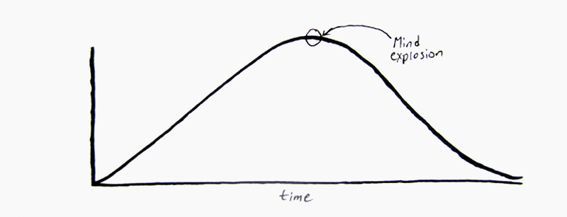

I’m fascinated with illusions, especially close-up magic like card tricks. Being a willing participant in a brain-hacking, to witness something impossible, is incredibly exciting and attractive.
During the magical moments of a trick, logic and reason is pushed out of our minds. We straddle the line between the fantasy world of mind-readers and the uneventful day-to-day reality of life. We know this experience isn’t actually happening, but for the trick to work, we must suspend disbelief and allow ourselves to be fooled.
Our reality becomes a bell-shaped curve while we wait for the punchline. Our suspense builds and builds, until the plot twist is revealed, where we see card you signed at the beginning of the trick is now in your wallet.
As we come off the high point, hours later after the trick is finished, we tell our friends and family about it. We convince them it was impossible, yet it happened, and we use phrases like “you just had to be there,” or “you wouldn’t believe me if I told you.” Our retelling of the story skews logic even more, and the story becomes an illusion in itself, tricking the listener to suspend their belief of your immense gullibility.
When it comes to developing new ideas, we become the magicians. With simple sleight of hand and presentation, we convince our audience this is the pinnacle of reality. This is it; this is what you’ve been waiting for! The audience allow themselves to be overtaken by this new app, device, or product, and they’ll spread the word near and far about its amazing abilities and additions to the world. Previously it didn’t exist, but by a stroke of genius and some coincidence, it now exists in this world. Together we’ve crossed over and brought something into this world that didn’t exist before. Couldn’t exist. It’s like bringing in a three-dimensional object into a two-dimensional world, or suddenly being able to see other parts of the electromagnetic spectrum, like radio and ultraviolet waves, rather than only the visible spectrum.
For all magic tricks to have their desired effect, they must end. Life must return to before the trick happened, because if reality doesn’t snap back, it’s no longer a temporary illusion but rather, it’s a paradigm shift. If David Copperfield never made the Statue of Liberty reappear, we would be living in a world without this great American symbol. It would simply be gone. The US would be different, and we’d probably ban all magicians.
Our products, new ideas, and even artistic talents aren’t magic tricks. They are no less amazing, or more believable at first exposure, but where magic tricks send us whirling back to reality when they end, our groundbreaking inventions don’t. They continue on and affect our reality in more ways than a ten minute adrenaline rush, and that’s more amazing than making the Statue of Liberty vanish into thin air and bringing it back.